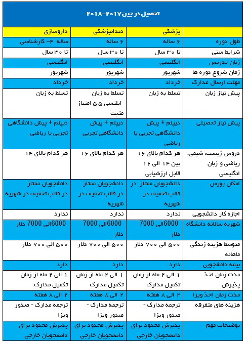

در سالهای اخیر تعداد ایرانیان علاقمند به تحصیل در رشته های پزشکی در کشور چین به شکل چشمگیری افزایش یافته است. همچنین شایان ذکر است که درآخرین لیست منتشر شده از سوی وزارت بهداشت در آبان 13955 ، تعداد زیادی از دانشگاههای چین نیز برای اولین بار وارد لیست دانشگاههای مورد تایید ایران شده و مدارک صادره از چین برای دانشجویان سال تحصیلی 2017 به بعد قابل ارزشیابی می باشد.
لیست دانشگاههای علوم پزشکی چین مورد تایید وزارت بهداشت ایران
Lanzhou University
Huazhong University of Science and Technology
Nanjing Medical University
Soochow University
Southeast University
Jilin University
Shandong University
Shantou University
Sun Yat-Sen
Wuhan University
لیست دانشگاههای مورد تایید وزارت علوم برای تحصیل (۲۰۱۷-۲۰۱۸)

چرا تحصیل پزشکی در چین ؟
دانشگاههای مورد تایید وزارت بهداشت ایران
امکان ثبت نام بدون نیاز به شرکت در امتحان ورودی
دانشگاه های پزشکی چین توسط شورای پزشکی چین نظارت میشوند و مورد تایید سازمان جهانی بهداشت WHO میباشند.
تعداد دوره های پزشکی به زبان انگلیسی در چین رو به افزایش می باشد و این موضوع باعث به وجود آمدن یک محیط بین المللی مناسب برای دانشجویان خارجی شده است.
اکثر دانشگاه های پزشکی چین سالهاست که رشته پزشکی را تدریس می کنند و دارای اعتبار جهانی می باشند و مدرک پزشکی صادر شده ازدانشگاه های چین برای کشورهایی مانند انگلستان و آمریکا معتبر است.
از نظر هزینه تحصیل و زندگی کشور چین برای ادامه تحصیل در رشته های پزشکی بسیار ارزانتر از کشورهای غربی است و شهریه دانشگاه ها معمولاً یک سوم شهریه دانشگاههای انگلستان و آمریکا است.
دانشگاههای پزشکی چین دارای بیمارستانهای بزرگ و مجهز هستند که دانشجویان می توانند در دوره کارآموزی خود در آنها مشغول به کار شده و از امکانات این بیمارستانها بهره مند شوند.
شرایط تحصیل پزشکی در چین
به طور کلی دوره های تحصیل پزشکی در چین به زبان انگلیسی 6 سال (2+4) به طول می انجامد، به این ترتیب که پس از سپری کردن 4 سال دوره آموزشی 2 سال دوره کارآموزی برگزار میشود که طول دوره کارآموزی بنا بر قوانین هر دانشگاه ممکن است متفاوت باشد. برخی از دانشگاه ها برای پذیرش ممکن است شرایط خاصی تعیین کنند مانند نمره بالا در زیست شناسی، شیمی و ریاضی، یا ارائه مدرک IELTS و TOEFL
همچنین با در نظر گرفتن زبان تدریس که انگلیسی می باشد ولی عموماً دانشجویان بین المللی در 4 سال اول تحصیل خود به زبان انگلیسی درس میخوانند و در سال پنجم و ششم دروس به زبان انگلیسی-چینی ارائه می شود و در نهایت در سال آخر و برای ارتباط با بیماران در کلینیک ها در دوره کارآموزی، دانشجویان نیاز به تسلط نسبی به زبان چینی دارند به همین دلیل در تمام دانشگاه های پزشکی چین، آموزش زبان چینی یکی از واحدهای درسی می باشد و برخی از دانشگاه ها پیش از فارغ التحصیلی آزمون زبان چینی HSK برگزار می کنند.
برای متقاضیان تحصیل در چین نحوه ارزیابی عملکرد دانشجویان به این صورت طراحی شده که پیشرفت دانشجو در فراگیری دروس تعیین شده در برنامه درسی هر دوره به صورت مجزا و با جزییات بررسی می شود. تعداد آزمون های هفتگی که در طول هر سال تحصیلی برگزار می شود توسط ریاست دانشگاه تعیین می شود.
شروع سال تحصیلی در دانشگاه های پزشکی چین از ماه سپتامبر (شهریور) می باشد و مهلت ثبت نام و ارسال مدارک تا پایان ماه جولای (خرداد) می باشد. شهریه هر سال از 4000 دلار تا 8000 دلار بسته به نوع دانشگاه و شهر متفاوت می باشد.
مدارک لازم جهت اخذ پذیرش:
ترجمه شناسنامه به زبان انگلیسی
ترجمه ریز نمرات دیپلم و پیش دانشگاهی به زبان انگلیسی
ترجمه اصل دیپلم یا گواهی دیپلم به زبان انگلیسی
ترجمه اصل یا گواهی پیش دانشگاهی به زبان انگلیسی
پاسپورت معتبر
مدرک آیلتس (بعضی دانشگاهها)
توجه: با در نظر گرفتن این موضوع که دانشگاههای مورد تایید وزارت بهداشت در چین، شرایط ثبت نام در دوره های پزشکی بدون نیاز به شرکت در آزمون ورودی را دارند در نتیجه پذیرش دانشجویان خارجی برای هر سال محدود بوده و اولویت با کسانی خواهد بود که دارای نمرات لازم و مدرک زبان هستند. زمان ثبت نام برای سال تحصیلی 2017 از ماه دی 1395 آغاز شده و تا آخر خرداد 1396 ادامه خواهد داشت.
________________________________________________________
فرم ارزیابی رایگان کندو
لطفا پر نموده و به نشانی ایمیل زیر ارسال کنید.
info@cds.org.ir
دانشگاه شان دونگ
هزینه های تحصیل در دانشگاه شان دونگ
شهریه سالیانه ۴۵۰۰۰ یوهان
هزینه خورد و خوراک ۱۵۰۰ یوهان
اجاره خانه ۱۵۰۰-۲۰۰۰ یوهان
کلیه حقوق مرتبط به این وبسایت متعلّق به موسسه اعزام دانشجو کندو دانش آوران سام میباشد
cds.org.ir, Copyright©2015, All Rights Reserved
Design by : BOOMHUNK